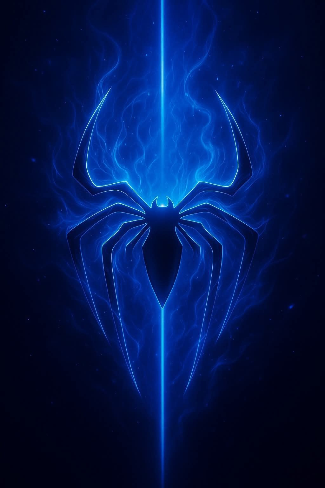
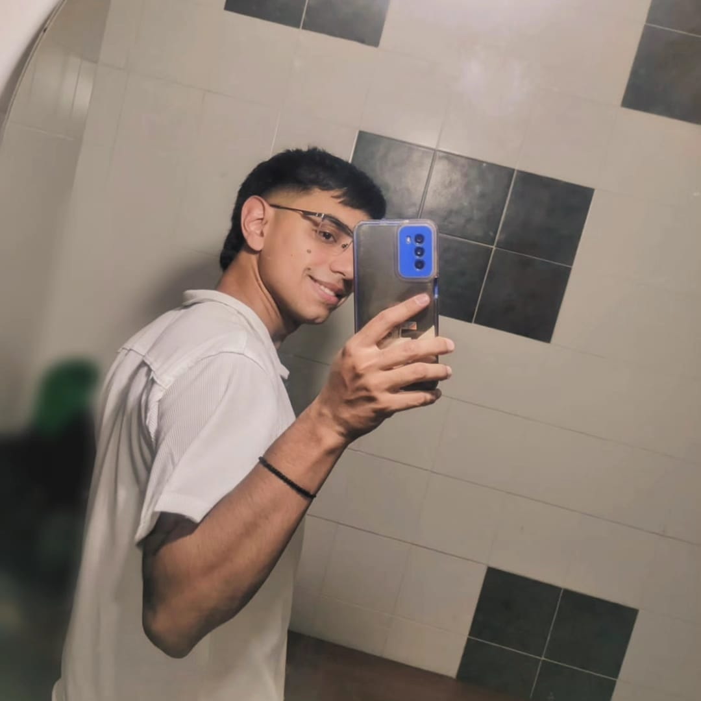
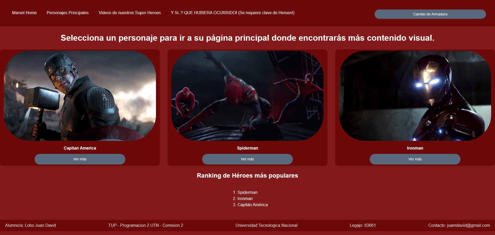

Habilidades
Aprendizaje en el bar
Cafecito con leche bien rico y con su corazoncito para satisfaccion del cliente. "(Y entre otras cosas)"
Programación
- Python
- JavaScript
- SQL
Herramientas
- Git & GitHub
- VS Code
En aprendizaje
HTML - CSS - JavaScript


Soy estudiante de programación en la UTN y actualmente trabajo como encargado en un bar. Me gusta aprender y mejorar constantemente en diferentes áreas.
Instituto Cervantes - Administración de Empresas
UTN - Programación (En curso)
- Compromiso
- Trabajo en equipo
- Adaptabilidad
- Ética laboral
Mi objetivo a corto plazo es desarrollarme como programador profesional e integrarme al sector tecnológico. Paralelamente, busco finalizar mis estudios en contabilidad, con la finalidad de combinar ambas disciplinas y potenciar soluciones que integren conocimientos técnicos y financieros.
Cafecito con leche bien rico y con su corazoncito para satisfaccion del cliente. "(Y entre otras cosas)"
HTML - CSS - JavaScript
Este fue mi proyecto de primer año, donde desarrollé una página dedicada a Marvel.
